class: center, middle, inverse, title-slide .title[ # Statistical Society of Australia<br> Victorian & Tasmanian Branch ] .subtitle[ ## National Speaker Series ] .author[ ###  ] .date[ ### 28 May 2025 ] --- layout: true .footnote[ <img style="vertical-align:middle" src='images/logo/other/png_transparent/SSA_Monogram_Navy-White.png' height='40px'/> These slides are available at https://statsocaus.github.io/vic/intro/2025-05-28-event.html ] <style type="text/css"> .speaker-photo { width: 150px; border: 3px solid black; border-radius: 5px; } </style> --- # Acknowledgement of Country <!-- https://www.statsoc.org.au/Guidelines --> <br><br> .w-70[ We acknowledge that we are on the lands of the Wurundjeri and Boonwurrung peoples of the Kulin nation who have been custodians of this land for thousands of years, and acknowledge and pay our respects to their Elders past and present. <br> We extend our welcome also to the traditional owners of the lands from which people in our livestream are joining. ] --- name: council # 👋 SSA Vic & Tas Council 2025 .flex[ .w-20[ .person.f6[ .circle-image-120[ <img src='images/council/alun.jpg'>] **President** Alun Pope ] ] .w-20[ .person.f6[ .circle-image-120[ <img src='images/council/elena.jpg'>] **Vice-President** Elena Tartaglia ] ] .w-20[ .person.f6[ .circle-image-120[ <img src='images/council/'>] **Secretary** Shuwen Hu ] ] .w-20[ .person.f6[ .circle-image-120[ <img src='images/council/rick.jpg'>] **Treasurer** Rick Tankard <i class='fab fa-twitter'></i>@RickTankard] ] .w-20[ .person.f6[ .circle-image-120[ <img src='images/council/'>] **Membership Officer** Ninh Tran ] ] .w-20[ .person.f6[ .circle-image-120[ <img src='images/council/'>] **Communications Officer** Nicholas Tierney ] ] .w-20[ .person.f6[ .circle-image-120[ <img src='images/council/chris.png'>] **ECSS Rep** Chris Selman ] ] ] .flex[ .w-20[ .person.f6[ .circle-image-120[ <img src='images/council/patrick.jpeg'>] **Industry Rep** Patrick Robotham <i class='fab fa-twitter'></i>@PatrickRobotham] ] .w-20[ .person.f6[ .circle-image-120[ <img src='images/council/paul.JPG'>] **Tasmanian Rep** Paul Burch ] ] .w-20[ .person.f6[ .circle-image-120[ <img src='images/council/'>] **Deputy Secretary** Ryan Covey ] ] .w-20[ .person.f6[ .circle-image-120[ <img src='images/council/anna.jpg'>] **Deputy Treasurer** Anna Wilkinson <i class='fab fa-twitter'></i>@AnnaLWil] ] .w-20[ .person.f6[ .circle-image-120[ <img src='images/council/dennis.png'>] **Deputy Membership Officer** Dennis Leung ] ] .w-20[ .person.f6[ .circle-image-120[ <img src='images/council/'>] **Deputy Comms Officer** Victorino Marquez Grajales ] ] ] <!-- .center[ --> <!-- **Tonight's event organiser is Elena** --> <!-- ] --> --- name: contact # Statistical Society of Australia <br> .f2.color-secondary[Victorian & Tasmanian Branch] .fr.center[ The Great Australian <br>Statisticians T-Shirt <img src="images/ssa-tshirts.png" width="300px"> .f4[[Designed by Ben Harrap](https://benharrap.com/post/2020-12-02-tshirt-competition/)] <i class="fas fa-shopping-cart"></i> .f4[Buy at https://www.statsoc.org.au/SSA-T-Shirt] .f6[Proceeds used to support early career statisticians.] ] .lh-title[ <br> <i class="fa fa-link color-secondary"></i> [www.statsoc.org.au/Victoria](https://www.statsoc.org.au/Victoria) <br> <i class="fa fa-envelope color-secondary"></i> [vic.branch@statsoc.org.au](mailto:vic.branch@statsoc.org.au) <br><i class="fa fa-envelope color-primary"></i> [eo@statsoc.org.au](mailto:eo@statsoc.org.au) <br><Br> <i class="fab fa-linkedin color-secondary animated bounce"></i> [SSA Victoria and Tasmania](https://www.linkedin.com/company/ssa-victoria-and-tasmania/) <br> <i class="fab fa-meetup color-secondary"></i> [bit.ly/ssavic-meetup](http://bit.ly/ssavic-meetup) ] ??? * You can find how to get in touch here, * in particular, if you want to get in touch with the Victorian Branch, please get in touch using the Victorian email address * I also want to remind you that the Society now has a T-shirt, and you can buy this in the link given here with the proceeds going to support early career statisticians --- # Membership * **Join SSA Vic & Tas!** * SSA membership is only $20 for students * Full membership is $265 annually * [Recent graduates, ABS employees, and retired members are eligible for discounts](https://statsoc.org.au/Forum-general-topics/12893603)! * Benefits: https://www.statsoc.org.au/page-1075427 --- # Upcoming events - <i class="fas fa-calendar"></i> **27 June** <br> *National Speaker Series Seminar, hosted by the Queensland Branch* <br> Estimating Size of Hidden Populations in Sensitive Contexts <br> Dr Mohammad Reza Baneshi <br> Location: Online. <br> - <i class="fas fa-calendar"></i> **June** <br> *Joint meeting with MLAI Meetup* <br> Location: In person in Melbourne. <br> - <i class="fas fa-calendar"></i> **July** <br> *Mentoring Night* <br> Location: Online. <br><br> --- class: inverse middle ## Data-Driven Insights: How Data Science Shapes Feature Development at Canva .circle-image-200.fl[ <img src="images/sarah_hunt.jpg">] ### **Dr Sarah Hunt** *Senior Data Scientist at Canva* <br><br> .f4[ Thanks to our Event Coordinator Jodi Phillips. ] ???